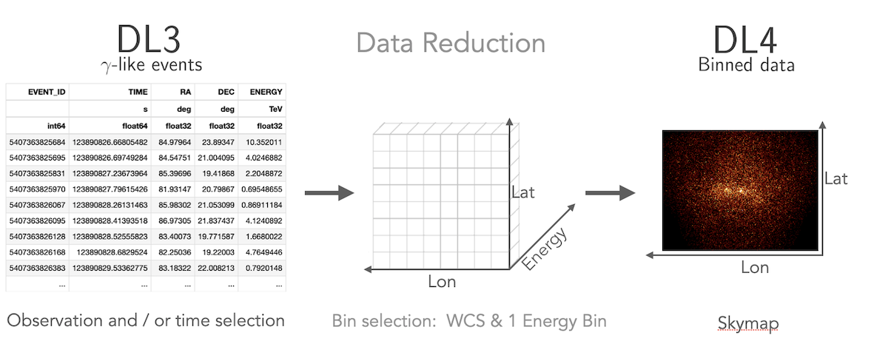

Getting started#
Installation#
There are various ways for users to install Gammapy. We recommend setting up a virtual environment using either conda or mamba. Here are two methods to quickly install Gammapy.
Update existing version? Working with virtual environments? Installing a specific version? Check the advanced installation page.
Recommended Setup#
We recommend using virtual environments, to do so execute the following commands in the terminal:
curl -O https://gammapy.org/download/install/gammapy-X.Y.Z-environment.yml
conda env create -f gammapy-X.Y.Z-environment.yml
Note
On Windows, you have to open up the conda environment file and delete the
lines with sherpa and healpy. Those are optional dependencies that
currently aren’t available on Windows.
Note
For gammapy versions prior to v1.2, if you’re using
Apple silicon M1 (arm64) architectures you have to open the
environment file and delete the sherpa entry. Currently there are
no conda packages available. You can then install sherpa
in the environment using python -m pip install sherpa.
The best way to get started and learn Gammapy are the Tutorials. You can download the Gammapy tutorial notebooks and the example datasets. The total size to download is ~180 MB. Select the location where you want to install the datasets and proceed with the following commands:
conda activate gammapy-X.Y.Z
gammapy download notebooks
gammapy download datasets
conda env config vars set GAMMAPY_DATA=$PWD/gammapy-datasets/X.Y.Z
conda activate gammapy-X.Y.Z
The last conda commands will define the environment variable within the conda environment.
Conversely, you might want to define the $GAMMAPY_DATA environment
variable directly in your shell with:
export GAMMAPY_DATA=$PWD/gammapy-datasets/X.Y.Z
Note
If you are not using the bash shell, handling of shell environment variables
might be different, e.g. in some shells the command to use is set or something
else instead of export, and also the profile setup file will be different.
On Windows, you should set the GAMMAPY_DATA environment variable in the
“Environment Variables” settings dialog, as explained e.g.
here.
Jupyter#
Once you have activated your gammapy environment you can start a notebook server by executing:
cd notebooks
jupyter notebook
Another option is to utilise the ipykernel functionality of Jupyter Notebook, which allows you to choose a kernel from a predefined list. To add kernels to the list, use the following command lines:
conda activate gammapy-X.Y.Z
python -m ipykernel install --user --name gammapy-X.Y.Z --display-name "gammapy-X.Y.Z"
To make use of it, simply choose it as your kernel when launching jupyter lab or jupyter notebook.
If you are new to conda, Python and Jupyter, it is recommended to also read the Using Gammapy guide. If you encounter any issues you can check the Troubleshooting guide.
Tutorials Overview#
Gammapy can read and access data from multiple gamma-ray instruments. Data from
Imaging Atmospheric Cherenkov Telescopes, such as CTAO, H.E.S.S., MAGIC
and VERITAS, is typically accessed from the event list data level, called “DL3”.
This is most easily done using the DataStore class. In addition data
can also be accessed from the level of binned events and pre-reduced instrument response functions,
so called “DL4”. This is typically the case for Fermi-LAT data or data from
Water Cherenkov Observatories. This data can be read directly using the
Map and IRFMap classes.
CTAO data tutorial HESS data tutorial Fermi-LAT data tutorial
Gammapy lets you create a 1D spectrum by defining an analysis region in
the sky and energy binning using RegionGeom object.
The events and instrument response are binned into RegionNDMap
and IRFMap objects. In addition you can choose to estimate
the background from data using e.g. a reflected regions method.
Flux points can be computed using the FluxPointsEstimator.
{kind=link}
1D analysis tutorial 1D analysis tutorial with point-like IRFs 1D analysis tutorial of extended sources
Gammapy treats 2D maps as 3D cubes with one bin in energy. Computation of 2D images can be done following a 3D analysis with one bin with a fixed spectral index, or following the classical ring background estimation.
{kind=link}
2D analysis tutorial 2D analysis tutorial with ring background
Gammapy lets you perform a combined spectral and spatial analysis as well.
This is sometimes called in jargon a “cube analysis”. Based on the 3D data reduction
Gammapy can also simulate events. Flux points can be computed using the
FluxPointsEstimator.

3D analysis tutorial 3D analysis tutorial with event sampling
Gammapy allows you to compute light curves in various ways. Light curves
can be computed for a 1D or 3D analysis scenario (see above) by either
grouping or splitting the DL3 data into multiple time intervals. Grouping
mutiple observations allows for computing e.g. a monthly or nightly light curves,
while splitting of a single observation allows to compute light curves for flares.
You can also compute light curves in multiple energy bands. In all cases the light
curve is computed using the LightCurveEstimator.
Gammapy offers the possibility to combine data from multiple instruments in a “joint-likelihood” fit. This can be done at multiple data levels and independent dimensionality of the data. Gammapy can handle 1D and 3D datasets at the same time and can also include e.g. flux points in a combined likelihood fit.